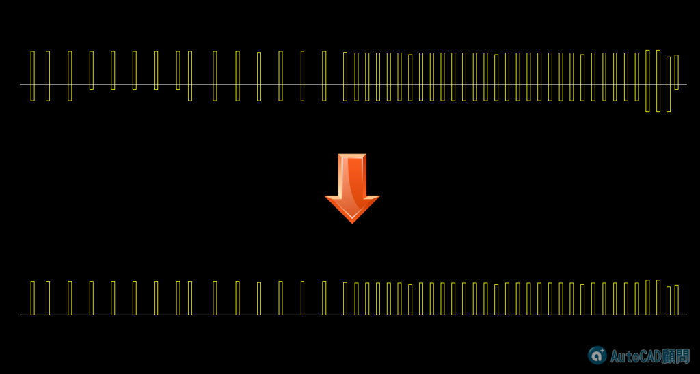

任務：請將上圖矩形黃線底部與白色線切齊齊平。最具效率或節省步驟的朋友們可以獲得「積分+1」，請各位朋友把握機會！
（註：一般會員得到積分1可以升等為初級會員）。
範例圖(請完成下圖)：

※每個人及公司的作法均不同，希望大家可以先分享自己的作法，再來看以下我分享的方式！
練習完成後請說明「步驟」、「貼圖」，回答的會員朋友可以得到（威望值 +6）。
範例DWG檔案下載(2004圖面格式)：
■步驟分享：我的影片方法供各位參考，歡迎一起研討喔（歡迎分享此文章給更多朋友）
第一步 JOIN接合，將線段轉成聚合線
第二步 EXTRIM快速修剪
第三步 聚合線設置封閉
其他繪圖小技巧主題:
測驗練習區: